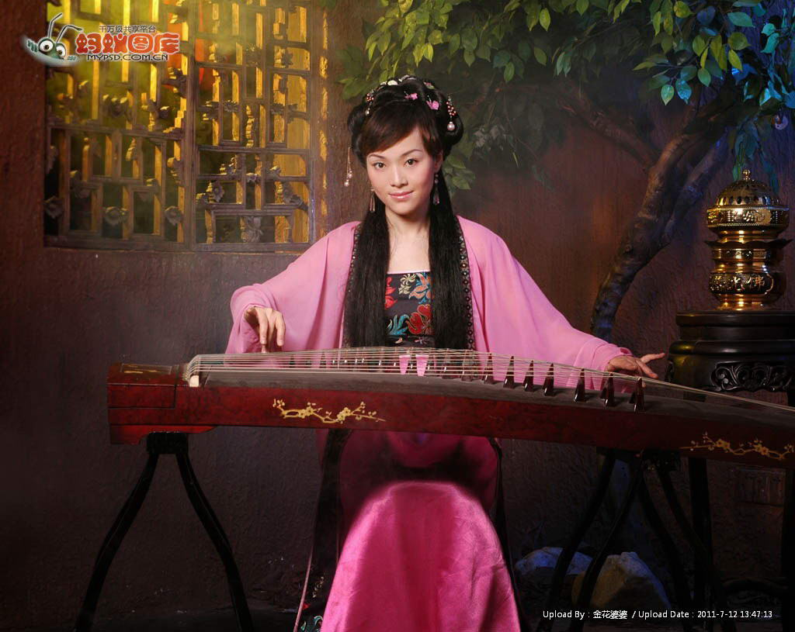
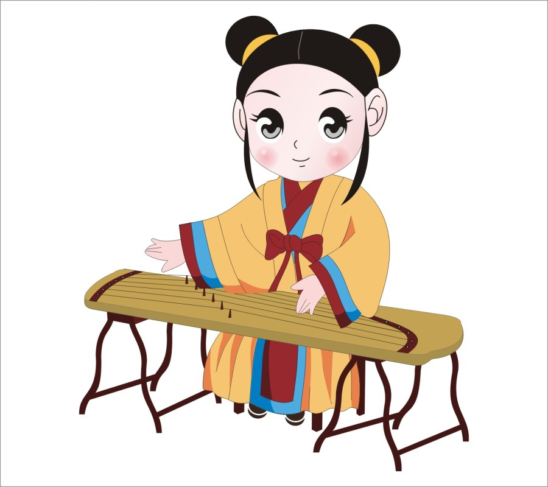

my instruct |
|||
| echo | my description | my instruct | my sport |
The koto is ancient ethnic Musical Instruments,structure the strings column by the panel YueShan string nail before tuning box full YueShan side panel with after the sound of string mouth bottom wear hole; Zheng shape is rectangle woodiness sound box,string frame zheng column (namely the wild goose column) can move freely,a string a sound,according to five scales is arranged,the first 25 string for the most in guzheng (points for zheng harp),has 13 tang string root,after six to 10 18 string string 21,at present the most commonly used a specification of the 21 string; Usually the model with S163 guzheng before-21,S representative S form YueShan,is the king of all with MiaoJinLin common invention,163 representative guzheng length 163 cm or so,21 representative guzheng string number 21 root |
 |  | |